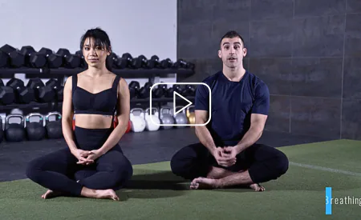

B946 · Step Into My Morning Routine [Discover Your Gift Inside]
Hi {first_name},
Over the past 4 years, I've incorporated a simple practice into starting my day that has made a significant impact on how I feel and approach life. It's become my go-to morning "bread and butter", and I'm excited to invite you to experience its benefits too.
This morning routine is easy to follow, takes approximately 10 minutes, and requires no special skills or equipment.
All you need is the commitment to yourself and this practice, which I've found to be incredibly rewarding each time I perform it and thus create a win to start the day.
Click here to access the routine.
As men, we often face the challenge of not feeling our best first thing in the morning. We might wake up feeling tight, stiff, and lacking energy, making it challenging to engage with the day ahead.
However, I've discovered that by integrating a few essential activities into our mornings, we can experience a remarkable shift in our physical and mental state:
To help you get started on this transformative journey, I'm sharing the exact morning routine from my Kettlebell Lifestyle Program.
Click here to access the routine.
 You can find this entire program incorporated as one element in the Elite Package of The Path to Inspired Action.
By consistently following this routine, you'll notice improvements in various aspects of how your body-mind performs.
Pay attention to how these areas are impacted: increasing energy levels, alertness and focus, how your joints feel more "greased" and agile, and your confidence and readiness to face the day elevates. You might also find that you can handle life's challenges with greater ease and resilience.
I'd love to hear about your experience with this morning routine, so feel free to share your thoughts with me by responding to this email.
And speaking of The Path to Inspired Action, we're currently offering early discounted pricing for three more days until July 31st.
Don't miss this opportunity to join the program and be a part of a group of dedicated men committed to self-development and contributing to each other's success.
Click here to learn more and apply today.
The applicants we've received so far have been exceptional! Men from all different stages in their self-development journey, all united by a shared willingness and commitment to growth.
If you resonate with this energy and want to make a meaningful change in your life, I encourage you to fill out an application and schedule a discovery and coaching call with me.
Let's rock this thing together!
I hope you find the morning routine gift helpful and that you'll apply it in your daily life. Remember, small changes in our routines can lead to significant transformations.
Best regards, Mike |